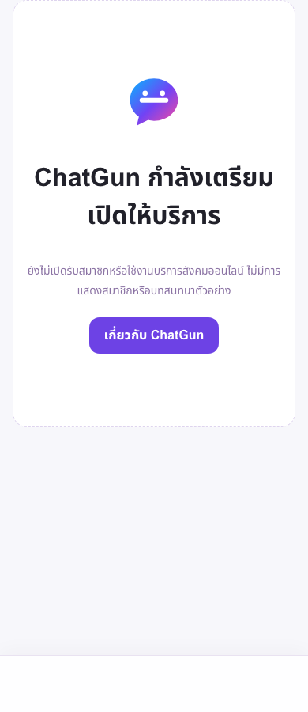
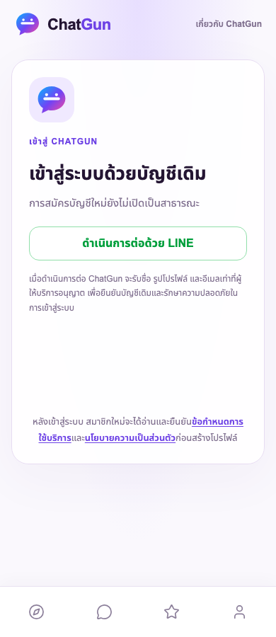

20 October 2026 · Asia/Bangkok · Draft PR #17 · implementation branch codex/issue-16-presence-no-demo.
Actual infrastructure and controlled owner-pilot deployment completed. Production is no longer just the closed prelaunch: approved policies and LINE-only invitation admission are live. Genuine owner login, consent, session and onboarding have not passed: the human participant confirmation/login is outstanding. Broader two-user/media Beta remains NO-GO. No mock member, account, OAuth identity, session, role or social activity was fabricated.
Production https://chatgun.social · exact deployed SHA c1116c25a77e0a96f1e53f9fe662b6a9c4aab671 · deployment 336fe5fa-c4ab-4bdd-a4da-6b91f0df1d88. Cloudflare canonical deployment and live release.json match. All 36 manifest HTML/JS/CSS hashes pass. /api/health, /api/auth/config and /api/social/config return200 JSON. No current Error1046 observed. Static resources remain outside Functions; invocation manifest includes /api/* only, and polling remains bounded to foreground active surfaces.
Isolated Preview https://issue13.chatgun-issue13-staging.pages.dev serves the same implementation SHA. Original Preview DB/R2 bindings and protected fixture fingerprint remain unchanged; no original NEAR/PiggyPrice changes, no staging reset/cleanup and no PR merge. The release was deployed directly, not merged into main. Latest Git evidence HEAD may be newer documentation/diagnostics; use the exact Production SHA above for deployed code and PR #17 for the final evidence commit.
Production release evidence · Canonical deployment / exact flags / counts · Protected staging integrity.
Confirmed account 23017b53386fb67fc62a52cdd017454c; Production DB chatgun-auth 9738a051-d914-42d0-8e7b-8098ef2b959d. A fresh protected 25,004-byte full export was imported successfully on a local clone and original record projections compared. Backup SHA256 4837380105cf8d7bd1da5ba55ae9b82fbdfdbfeeb5b2f6c1593b2279e1c964b7; directory0700/files0600 outside Git. Actual recovery bookmarks were recorded privately before migration; no destructive restore or tier-window guarantee.
A fresh remote schema-only rehearsal clone 02de170e-02cf-4c80-bc1e-3aee0010da27 received no personal rows, passed12→15, FK0 and second-run no-op. SQL hashes were pinned between rehearsal and Production. Then the owner-authorized versioned runner applied 0013 Direct Chat/Private Album, 0014 combined Gallery capacity, 0015 presence in order. A protected post-migration export was reimported and all original non-history record projections remained identical. Five security triggers match source SQL, presence indexes2, historical photos default private and FK0. Actual second Production apply: no migrations to apply. Never blindly replay raw ALTER.
Latest aggregate counts: {"users":0,"identities":0,"sessions":0,"account_acceptances":0,"member_profiles":0,"beta_invitations":0,"beta_enrollments":0,"moderation_roles":0,"social_messages":0,"social_media":0}. These are actual records, not synthetic placeholders. Account/identity/profile counts0 mean no owner E2E has occurred yet. Schema readiness is PASS; real-person Album/Chat behavior is not inferred from empty tables.
Fresh backup/local recovery rehearsal · Remote clone · Actual applied migrations / preservation.
Production MEDIA → chatgun-media-production is configured and carried into the new Production deployment. r2.dev disabled, public custom domains0; no staging assets copied or Production media uploaded. Existing Preview MEDIA → chatgun-media-staging is preserved. Upload and moderation flags remain false, quarantine true and Sensitive false. Authenticated bytes/grants/quota/moderation/deletion under real users remain BLOCKED until the third wave. Anonymous/disabled endpoint probes denied access, but this is not a real uploaded-object authorization E2E claim.
Cleanup Workers remain disabled/unscheduled. No genuine data deleted and no scanning vendor enabled. Media deletion/retry operations and narrow roles must be approved and verified before uploads; no unsupported physical-retention deadline.
The owner explicitly confirmed completed qualified Thai legal review and confirmed 20 October 2026 upon publication (Asia/Bangkok) as the effective date. This is recorded as owner-reported review completion, not independent legal certification by the agent. Approved source versions and hashes are locked in policy-release.json. The controlled build refuses missing approvals, changed legal hashes or future effective dates. Pending/draft acceptance-version values are rejected by the backend even if flags are accidentally enabled.
Published Privacy, Terms, Deletion and Beta notice preserve confirmed operator/contact, actual 18+ self-declaration without DOB, private storage and truthful limitations. Current invitation scope is the confirmed owner only; ages18–19 defer pending a specific capacity procedure. No independent age verification or Sensitive access. Original candidate approval-package files are an archive, superseded by the recorded decision and published release.
All broader activation remains conditional. Owner coverage stays daily19:00–22:00 Asia/Bangkok,21h/week, no backup and no24h monitoring or immediate-response promise. Emergency/appeals/absence operations, scanning risk and enforceable cleanup/backup lifecycle remain constraints before broader social/media waves.
Only LINE OAuth, invitation admission, versioned acceptance, onboarding and the authenticated own-profile shell are enabled. Public signup and every later-wave service stay off. No invitation has been issued without the outstanding participant confirmation, no account pre-created and no Admin grant.
| Key | Verified live value |
|---|---|
OAUTH_LOGIN_ENABLED | true |
OAUTH_ENABLED_PROVIDERS | line |
LINE_EXPECTED_CLIENT_ID | 2012039306 |
LINE_EMAIL_ENABLED | false |
NEW_ACCOUNT_REGISTRATION_ENABLED | false |
BETA_INVITATION_REGISTRATION_ENABLED | true |
ACCEPTANCE_FLOW_ENABLED | true |
ADULT_ONBOARDING_ENABLED | true |
SOCIAL_APP_ENABLED | true |
ADULT_NOTICE_VERSION | adult-beta-2026-10-20-rc1 |
TERMS_VERSION | terms-beta-2026-10-20-rc1 |
PRIVACY_VERSION | privacy-beta-2026-10-20-rc1 |
PUBLIC_DISCOVERY_ENABLED | false |
MESSAGING_ENABLED | false |
MEDIA_UPLOAD_ENABLED | false |
MEDIA_QUARANTINE_ENABLED | true |
MODERATION_TOOLS_ENABLED | false |
PRESENCE_ENABLED | false |
RATINGS_ENABLED | false |
SENSITIVE_CONTENT_ENABLED | false |
EMAIL_OTP_ENABLED | false |
MOBILE_OTP_ENABLED | false |
IDENTITY_VERIFICATION_ENABLED | false |
DEMO_MODE_ENABLED | false |
DEMO_AUTO_START_ENABLED | false |
PUBLIC_DEMO_CANARY_ENABLED | false |
FRIEND_REQUESTS_ENABLED | false |
The actual console was rechecked20 October: existing ChatGun Production channel2012039306 is still Developing with exact https://chatgun.social/api/auth/oauth/line/callback. No provider publishing, new applications, credential copying or console edits. Server runtime now pins the intended channel and exposes only a readiness boolean: Production encrypted client ID matches expected channel — PASS. A mismatch is rejected before authorization. Secret metadata is preserved, but the actual secret pair and valid token exchange are NOT verified until human OAuth succeeds.
| Journey | Actual status |
|---|---|
| LINE redirect, human credentials/MFA/consent, valid callback/session | BLOCKED — human owner/channel-role/eligibility confirmation and manual Turnstile/LINE flow not completed. No code, token, cookie or fake identity used as proof. |
| Acceptance → Onboarding → genuine profile → refresh/logout/relogin | NOT RUN under a real Production user. Local simulated handlers cover state machine, unchecked confirmations, bypass rejection, same-version recovery and session lifecycle. |
| Two-user Discovery, direct Chat, unread/read, presence/privacy/block/report | BLOCKED — no two genuine consenting accounts; service flags off. Do not substitute fictional members or the local fixtures. |
| Public/private Gallery, Chat approval/revoke, moderation/R2 deletion | BLOCKED — no human media, uploads/moderation off and roles0. Private R2 and schema binding PASS are not functional-human workflow success. |
| Genuine linking/deletion and Admin | NOT RUN — separate authorized identity/consent and privately confirmed owner UUID required. No genuine account deleted; no privileged role assigned. |
| Negative security | Actual Production missing/untrusted LINE state rejected; Google/Facebook start disabled and anonymous/disabled social/media routes denied. Expiry/replay/token/audience/nonce/invitation/linking/session/deletion cases pass local integration; actual human cancellation/unauthorized provider account and genuine post-logout session tests NOT RUN. |
Next necessary human step: answer the outstanding private participant question (intended owner, legitimate LINE Admin/Tester, self-declared age20+ for this restricted pilot; no birth date or identifiers). Then issue one30-minute single-use invitation to a protected local file and open it in a retained Chrome tab. Human completes Turnstile, LINE MFA/consent and own-profile input. After a real callback, inspect D1 privately and show the internal UUID privately for explicit confirmation before any Admin role. Do not send credentials, OTPs, tokens or UUIDs to public reports.
| Scope | Result |
|---|---|
| Unit/integration/security | 168 PASS,0 FAIL,0 SKIP; simulated providers/in-memory fixtures explicitly not human OAuth. |
| Local Chromium390/768/1440 | 13 PASS,0 FAIL,0 SKIP; includes owner-only card with Discovery disabled. No new remote mock users created. Results. |
| Isolated controlled release | 14 PASS; all36 HTML/JS/CSS digests verified. OAuth remains disabled on the isolated project; no Production credentials copied into staging. |
| Actual Production controlled release | 22 PASS,0 FAIL; all36 digests, approved policy pages, JSON APIs, LINE-only admission, runtime channel match, later-wave gates, anonymous denial and invalid state. Evidence. |
| Actual Production public browser | 390/768/1440px: only LINE after configuration readiness, no overflow or uncaught page errors. CAPTCHA NOT solved; not genuine login. Real Android/iPhone hardware unavailable. |
| CI | PASS on exact deployed SHA. Recorded Linux run. Earlier closed checkpoint9c856ee passed35 local +35 Preview +35 Production checks before controlled pilot. |
| Historical suites/manual scenarios | Retired demo-only suites and human provider/social journeys are NOT counted as executed. BLOCKED/NOT RUN is not included in PASS counts. |
Executed failure and repair: the first pilot strict HTML integrity check failed because Cloudflare Email Address Obfuscation inserted data-cfemail/email-decode markup into five public files. Targeted no-cache,no-transform headers cover both .html and extensionless policy/notice routes, preserving approved source content, CSP and auth controls. No zone-wide WAF change. Added regression coverage; actual full HTML/JS/CSS checks now pass. An initial screenshot assertion also ran before config rendering; the capture harness now waits for disabled-provider DOM state. Incident evidence · Official no-transform behavior.
The owner-only shell defect was fixed without design changes: no Discovery API request, only own-profile card, disabled location button and truthful closed-Discovery text. It is component-tested, not falsely called a genuine owner screenshot.
Current APIs200 and no1046. Account-scoped adaptive Pages estimate at the recorded check: 45 requests in its UTC-day window. Sampled/delayed statistics are not exact billed usage, plan entitlement or a promise of future capacity. No billing changes. Usage evidence. No24h monitoring or configured paid alerts claimed.
A durable protected copy of the last verified closed release 9c856eea06b8d959a3e33491429e30c9b4c99bfa and its matching Functions/config is preserved outside Git. It has the private Production binding and closed flags. On a critical failure, disable affected flags or redeploy this validated closed package to the confirmed ChatGun account/project, verify SHA/assets/JSON APIs and preserve D1/R2. Do not revert migrations, delete accounts/media, drop tables or run Time Travel restore without separate destructive-recovery approval. Prefer an audited forward repair.
Before any second-person wave: real owner E2E, private UUID confirmation, consenting tester identities, location/DM/privacy and operational readiness. Before media: explicitly scoped roles, real quarantine/manual decisions/private permission/revoke/quota tests, safe cleanup/retries, staffed procedures and no Sensitive delivery. Public registration, provider publishing and paid services remain separately restricted. No fake activity is used to fill the empty service.
Assessment: infrastructure, approved publication and guarded owner-pilot configuration PASS. Real-user Beta completion remains NO-GO until actual human E2E and later-wave gates pass. This is no longer blocked on migration/binding or a missing effective date.


Actual tablet768px · Actual desktop1440px · Browser capture evidence · Local component own-card proof — not a real user · Consolidated machine summary.